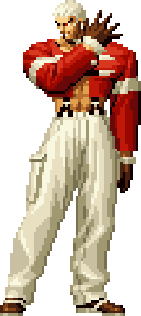

Yashiro Nanakase LV3
Perfil Del Personaje |
|
Nombre: Yashiro Nanakase
Autor: Ahuron Editor: LASH Version: 11,19,2013 Version Mugen: 1.0 Sistema: K.O.F. Memorial. Estilo de pela: Ataques Principalmente En Huelga. Cumpleaños: 31 De Diciembre Nacionalidad: Japón Tipo de sangre: O Altura: 190 cm Peso: 99 kg Comida favorita: Menma, lamen. Deporte favorito: Natación. Lo más importante: Ámbar. Le desagrada: Berenjenas, Lugares Estrechos. Actor vocal: Desconcido. Lanzado el: 19.Dec.2013 Actualizado el: --.---.-- ---------------------- Nota ---------------------- Datos obtenidos de la versión de Ahuron. Abra el archivo Configuración.cns y leerlo. Prensa START y seleccionar para el Modo alternativo. |
 |
Lista De Movimientos |
|
|
|
Paletas De Color |
Paletas Normal


Paletas De La Tierra Reseca


|
Agradecimientos |
|
Beta Testers: aznpikachu215/Btierk2 • SNK-Playmore (para la serie "The King Of Fighters") • Elecbyte (para el motor de M.U.G.E.N.) • Ahuron(Para El Char) • Aggli y Mi (Para El AI) • aznpikachu215/Btierk2 (el primer video que quisiera saber sobre MUGEN) • Mugen Guild Foro, Mugen Infantry, MUGEN Y ANIME LATINOAMERICANO. • jfct555 (su LeeMe! HTML) • Gracias a todos. |
Acera De |
|
Uso Público: • Si usted va a utilizar este personaje en un juego específico o si te gustan mis creaciones o trabajar, por favor envíeme un correo electrónico a lashie_z@hotmail.com para que yo pueda saberlo. •Si es posible, por favor califique mi personaje / trabajo mediante el envío de un e-mail. •Si usted necesita utilizar cualquiera de los sprites / códigos o cualquier otra cosa, por favor envíeme un correo electrónico para que yo soy responsable ante los autores de respeto cuando me preguntó sobre sus sprites en uso. Mantenimiento: • SI usted tiene alguna sugerencia o encuentra cualquier tipo de culpa en este trabajo, Por favor envíeme un correo electrónico al respecto. |